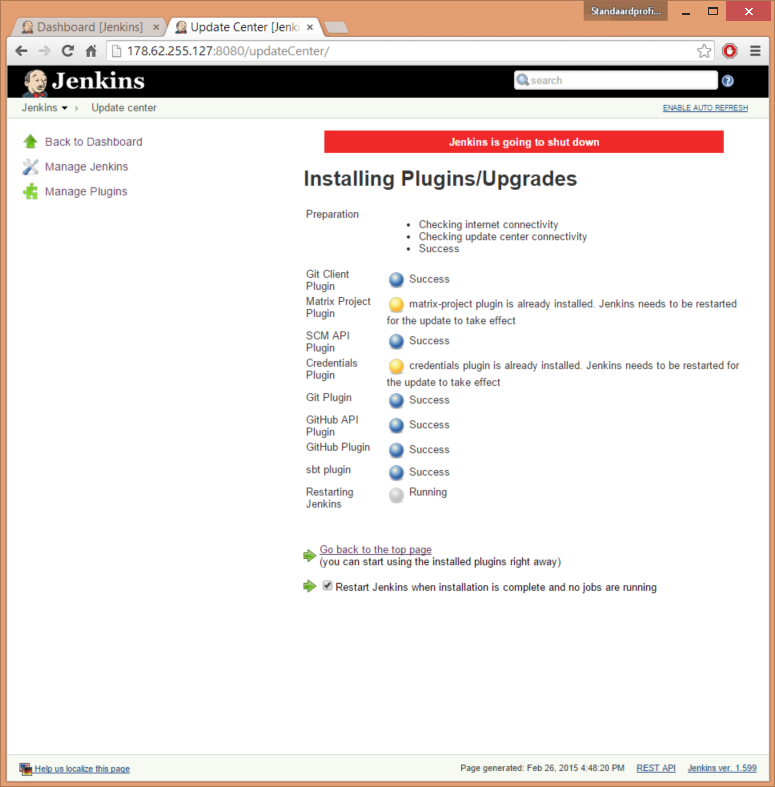
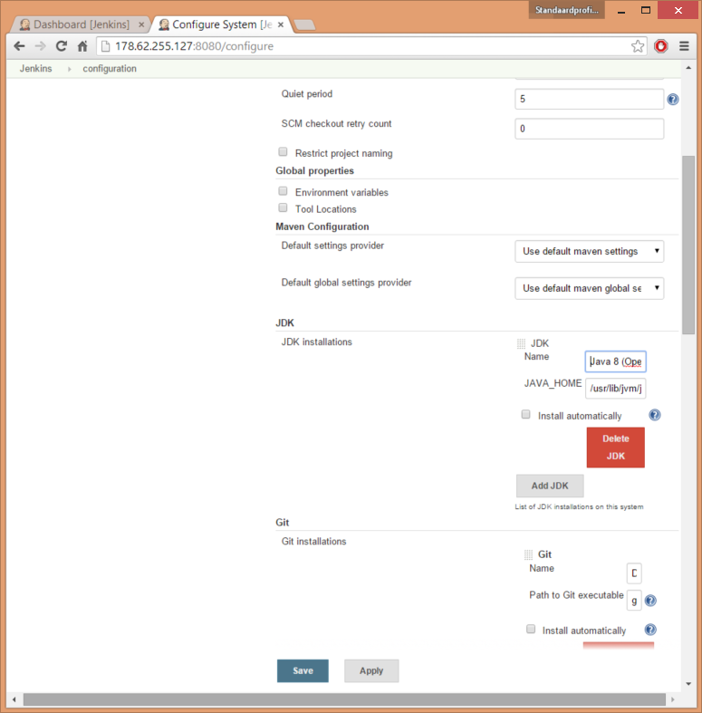
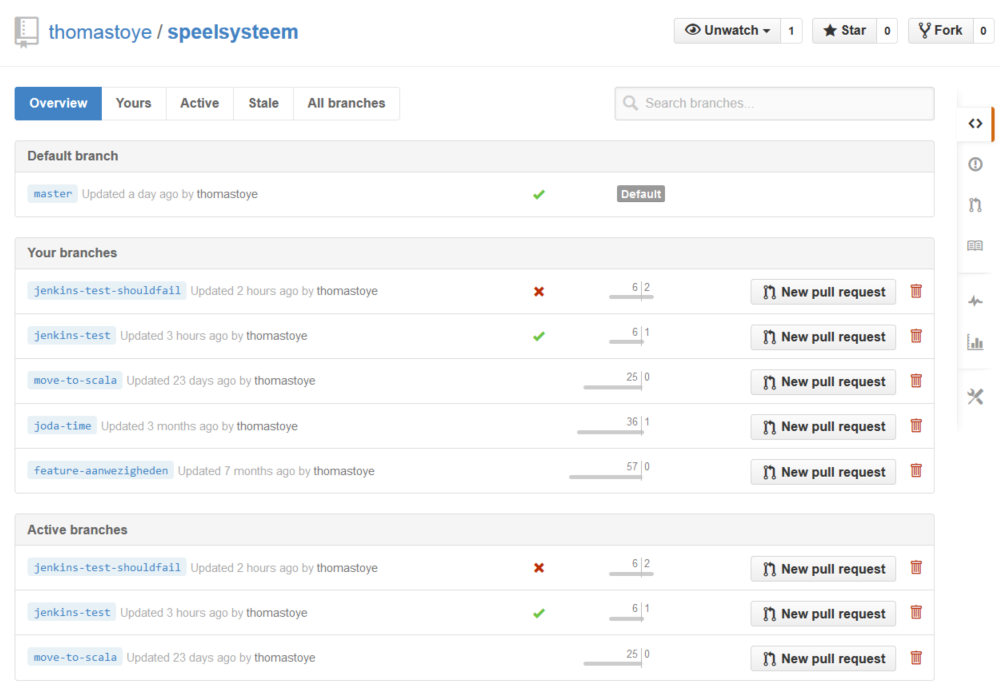

GitHub offers a student pack to those who are still studying. Among the long list is $100 in credit for Digital Ocean. I took the opportunity to try out continuous integration with Play! 2 and Jenkins.

Creating a new droplet
After registering with Digital Ocean, I applied the discount. I immediately got started and deployed Ubuntu 14.10 x64 on the cheapest droplet.
Jenkins
Jenkins is a Continuous Integration (CI) server. In short, it builds and tests your code regularly. Here we will use commits to a git repository as the trigger for starting builds: every time a commit gets pushed, Jenkins will pull it in and build and test your code.
Installing Jenkins
I followed this guide to install Jenkins on the new Ubuntu droplet.
Basically:
# wget -q -O - http://pkg.jenkins-ci.org/debian/jenkins-ci.org.key | apt-key add -
# echo deb http://pkg.jenkins-ci.org/debian binary/ > /etc/apt/sources.list.d/jenkins.list
# apt-get update
# apt-get install jenkins git unzip openjdk-7-jdk # also grab git, OpenJDK and unzip here
# service jenkins start # or restart
And then Jenkins will be running on the IP of your droplet, port 8080.
Follow the security as described in the guide mentioned above.
Install Scala and sbt
Based on this, we’ll now install Scala and sbt.
# wget http://www.scala-lang.org/files/archive/scala-2.11.5.deb
# dpkg -i scala-2.11.5.deb
# rm scala-2.11.5.deb
# wget http://dl.bintray.com/sbt/debian/sbt-0.13.7.deb
# dpkg -i sbt-0.13.7.deb
# rm sbt-0.13.7.deb
I later found out that sbt has a repository, you could just as well do this (note: I don’t recommend this anymore, I reinstalled my Jenkins server and it had trouble with the sbt from this source):
# echo "deb https://dl.bintray.com/sbt/debian /" > /etc/apt/sources.list.d/sbt.list
# apt-get update
# apt-get install sbt
Setting up swap
I choose the smallest instance, which would soon run out of memory. Therefore, I added a 4G swap file, by following this guide.
# fallocate -l 4G /swapfile
# chmod 600 /swapfile
# mkswap /swapfile
# swapon /swapfile
# nano /etc/fstab # mount on boot: /swapfile none swap sw 0 0
# nano /etc/sysctl.conf # set swappiness: vm.swappiness = 10
Testing your commands out
Create a new, non-root user, add him to the sudo group, and su:
# adduser thomas
# usermod -a -G sudo thomas
# su thomas
Go to the new home directory and try out your build. I always do this to make sure I installed everything successfully\:
$ cd ~
$ mkdir tmp
$ cd tmp
$ git clone https://github.com/thomastoye/speelsysteem.git
$ cd speelsysteem
$ sbt compile # if this is the first time, the Ivy cache will be empty and this might take a while

Installing plugins for Jenkins
Go to Manage Jenkins > Manage plugins and install the following plugins:
Click on Install without restart. Check the Restart Jenkins when installation is complete and no jobs are running checkmark and wait a few minutes.
Now we need to configure the sbt plugin (no configuration is needed for the git plugin since we already installed git) by following the steps here:
Go to Manage > Configure Jenkins, then scroll down to the sbt section. Click on Add and enter the following path: /usr/share/sbt-launcher-packaging/bin/sbt-launch.jar. This is assuming that you installed the deb package or used the package manager to install sbt. Then save the page.

Set the JDK
$ sudo update-alternatives --config java
There are 2 choices for the alternative java (providing /usr/bin/java).
Selection Path Priority Status
------------------------------------------------------------
* 0 /usr/lib/jvm/java-7-openjdk-amd64/jre/bin/java 1071 auto mode
1 /usr/lib/jvm/java-7-openjdk-amd64/jre/bin/java 1071 manual mode
2 /usr/lib/jvm/java-8-openjdk-amd64/jre/bin/java 1069 manual mode
Press enter to keep the current choice[*], or type selection number: 2
update-alternatives: using /usr/lib/jvm/java-8-openjdk-amd64/jre/bin/java to provide /usr/bin/java (java) in manual mode
$ sudo update-java-alternatives -s /usr/lib/jvm/java-1.8.0-openjdk-amd64
I choose to use OpenJDK 8, because in some projects I make heavy use of lambdas and streams.
Now, set the JDK in Jenkins. Go to Configure > Manage Jenkins, and click on JDK Installations…. Click on Add JDK. Uncheck Install automatically and choose /usr/lib/jvm/java-1.8.0-openjdk-amd64 as JAVA_HOME. Give it a good name (“Java 8 (OpenJDK)” ought to do it).

A first Jenkins job
Now that we have all of the configuration out of the way, let’s create the job. From the dashboard, create a new job.
Give it an appropriate name, and choose “freestyle project”.
- Under GitHub project, use
https://github.com/user/project, for examplehttps://github.com/thomastoye/speelsysteem - Select the JDK we set up
- Choose git as version control
- Enter the name of your repository. I’ll be using
https://github.com/thomastoye/speelsysteem.git. Note that we still have to enter this, even though we configured GitHub above. - No credentials are needed for public projects
- I want to build all branches, so I blank the Branch specifier
- Enter the name of your repository. I’ll be using
- Select Build when a change is pushed to GitHub under Build triggers
- Add a Build step. Choose
Build using sbt- Select the sbt launcher we made earlier
- Fill in the sbt tasks you want to run. I’ll just use
compilefor now, later in this article we’ll set up fancier tasks like tests and coverage
Now click Build now. You’ll get a notification that a build is scheduled. The first build can take a while. The Ivy cache for the user jenkins, which was created when installing Jenkins and is used to run it, is empty.
Integrating with GitHub
Auto-build on commit
We have a build trigger that is set to Build when a change is pushed to GitHub, but we need to do one more thing before this works. Jenkins needs to know when a change is pushed, and for that we can use GitHub webhooks. Instead of managing them ourselves, we will offload this to the GitHub plugin for Jenkins.
Now go to GitHub and go to Settings > Applications > Personal access tokens > Generate new token. Select the following and generate the token:
reporepo:statuswrite:repo_hookadmin:repo_hookadmin:org_hook
Unfortunately, the documentation doesn’t mention what scopes the application needs, so this is mostly guesswork. repo:status will be used in the next section. Copy the token, it will only be shown once.
Go back to Jenkins and go to Manage Jenkins > Configure system. Scroll to the bottom and under GitHub Web Hook, use the following:
- Let Jenkins auto-manage hook URLs
- Override Hook URL: leave unchecked
- API URL: leave blank
- Username: your GitHub username
- OAuth token: the token from GitHub.
You can now try Test Credential.
Finally, check if the webhook shows up in your project. Go to your project on GitHub, then Settings, then Webhooks and Services. There should be a Jenkins (GitHub plugin) under services. If not, go to your Jenkins project, click Configure, and click Apply without changing anything. The webhook should show up on the GitHub side then. If it still does not show up, consider creating the webhook manually.
Show build status
No doubt that you have seen projects on GitHub that use statuses on branches to indicate which ones built/tested successfully and which ones didn’t. Now that we have a continuous integration server in place, we can tell it to give provide GitHub with the statuses of builds.
Go to your project on Jenkins, hit Configure once again and scroll to the bottom. Click on Add post-build action and choose Set build status on GitHub commit. It doesn’t get easier than this!
Click on Build now, once the scheduled build is done running, you can check your branches on GitHub. You’re probably a little disappointed to only see a green checkmark next to the master branch and nothing next to the others, this will change as soon as you push commits to those branches.
Testing it out
Create a new branch jenkins-test, commit something on it and push. Jenkins should pick it up, build it and update the status on GitHub. Awesome!


Going further
A lot of the following was inspired by Continuous Integration For Scala Projects, which conveniently was published during the time I was writing this blog posts.
Setting the build status as pending
This can help you visualize if Jenkins picked up your commits from GitHub and is working on it.
Configure your project, add a build step: choose Set build status to “pending” on GitHub commit. Be sure to drag this above the Build using sbt step. After Jenkins is done building, it will set the appropriate build status (passing or failed), assuming you set the post-build step as described in a previous section.
Test results
If you run a test suite, obviously you want to see which tests passed and which didn’t. Jenkins has great support for JUnit. Let’s see if we can use Specs2 easily.
As seen here, sbt test generates valid JUnit xml reports. That means we can just use the Publish JUnit test result report post-build action. As the name, use target/test-reports/*.xml.
Scalastyle
Scalastyle is like Checkstyle, but for Scala. There’s an sbt plugin for it, which we’ll use. You should read the page on the sbt plugin, the rest of this section is based on that.
To use it, add the following to project/plugins.sbt:
addSbtPlugin("org.scalastyle" %% "scalastyle-sbt-plugin" % "0.6.0")
resolvers += "sonatype-releases" at "https://oss.sonatype.org/content/repositories/releases/"
Run sbt scalastyleGenerateConfig to generate a config file and sbt scalastyle to generate a report.
Generating a report for Jenkins
Install the Checkstyle Plugin for Jenkins. Now configure your project and add a new Post-build action, with the results file being target/scalastyle-result.xml (the default Scalastyle file). Also add scalastyle to the list of sbt actions in your build step, this will generate the report.
Coverage
What are tests without coverage reports? We will use sbt-scoverage to generate scoverage coverage reports compatible with Cobertura (which has Jenkins support).
Add the following lines to your project/plugins.sbt:
resolvers += Classpaths.sbtPluginReleases
addSbtPlugin("org.scoverage" % "sbt-scoverage" % "1.0.4")
Now you can use sbt coverage test to generate coverage reports. Open target/scala-2.11/scoverage-report/index.html in a web browser to view the report.
Integrating with Jenkins
Install the Coberture Plugin. Now add another post-build action, Publish Cobertura Coverage Report, with target/scala-2.11/coverage-report/cobertura.xml as the report pattern. Add coverage to your sbt actions, you should have something like coverage test scalastyle by now.

A note on cleaning
I have don’t clean (sbt clean) before the other sbt actions in Jenkins because my builds would take too long, my CI server is a cheap CloudAtCost server (hey, I’m a college student, not a company). If I notice builds behaving weirdly, I’ll definitely add this, but for now I’ll leave it like this.
Conclusion
This concludes this blog post on continuous integration. To recap, continuous integration will grab your projects when you update your version control system, then build and run the test suite on the project. If either fails, the build will be marked as failed.
Next steps
In a future blog post, we’ll look at continuous deployment: as soon as the build succeeds, it gets hot-deployed. (This blog post has now been published!)